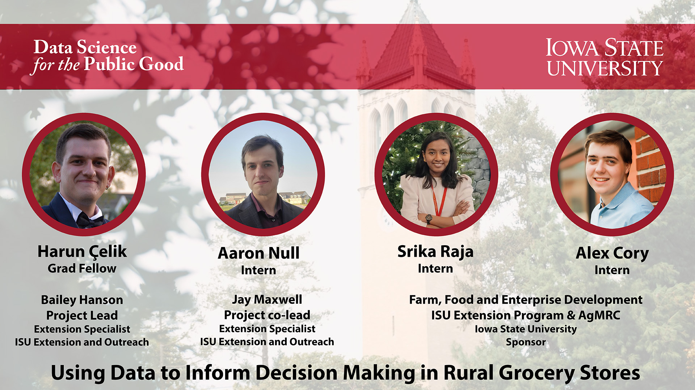
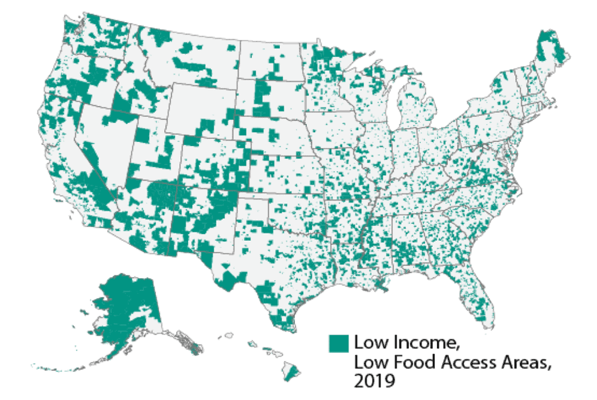
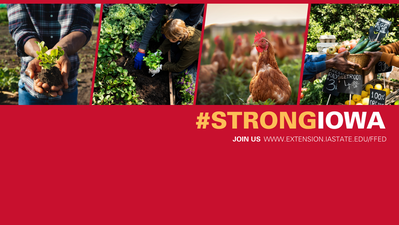
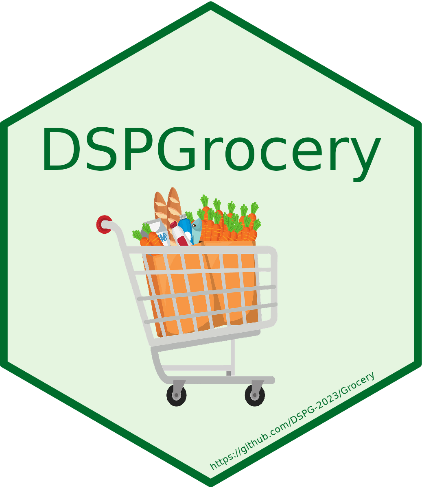
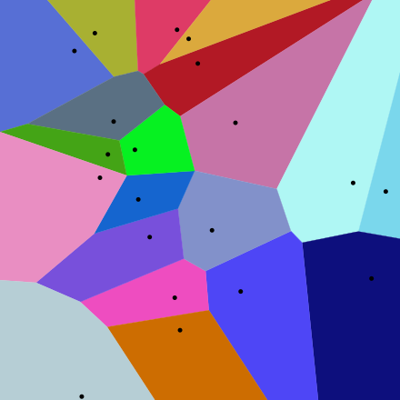
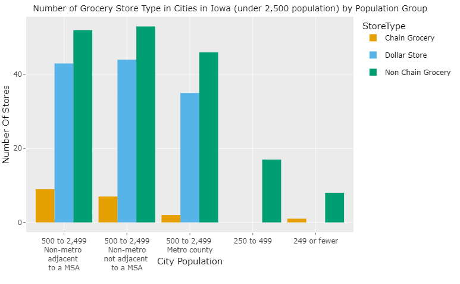
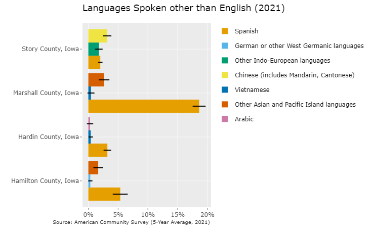
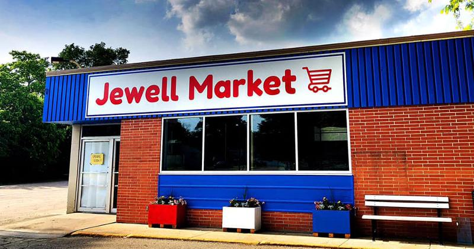

Introduction
In Iowa, as well as the United States generally, the lack of access to quality food continues to be a very important concern. In 2022, it was recorded by the Iowa Waste Reduction Center that 111 different communities in Iowa that met the USDA criteria for being food deserts. According to the USDA’s definition, a food desert is defined as an area with a poverty rate above 10% and not within 10 miles of a wholesome food seller or pantry. It is predicted that up to 41,500 Iowans could be living in communities like these, with low access to high quality, nutritious food. However, this is not just an Iowa problem: USDA researchers estimate that up to 19.5 million Americans had limited access to a supermarket or grocery store.

Research points to multiple factors underlying the prevalence of these food deserts. Generally speaking, areas with lower population growth, higher poverty levels and lack of reliable transportation are more likely to suffer from low food access. In addition, low food access disproportionately impacts communities of racial and ethnic minorities.
It has also been observed that the increased prevalence of dollar and convenient stores increase the barriers for investment for grocery stores in these smaller communities. Often, healthy food options cost more than cheaper, more convenient options. For those in disadvantaged, high poverty communities, the cost can be too much for many families even if these healthy options are nearby. In this way, competition from convenient food stores can have a damaging effect on a grocery stores profitability, as only larger supermarkets are often capable of lowering their prices to compete with these stores.
Our Project
We have teamed up with FFED ISU Extension and Outreach to produce an app to help potential grocery store owners find the right location for their store. Our hope is to help both entrepreneurs and consumers alike by aiding in the establishment of profitable stores to increase access to high quality food in areas where this access may be limited. We have created that an interactive map-based tool with potential rural grocery store owners in mind that lets them find optimal locations for their stores that are both profitable and enriching to these smaller communities.

The commissioners of this project, the Farm, Food and Enterprise Development Department of Iowa State Extension and Outreach, provided us with the original formulas to be incorporated into the tool. Our primary task was partly one of translation: we had been given 3 different Excel spreadsheets, one for each undergraduate intern, for each of the primary components of the calculation. Our job was to incorporate their functionality into an interactive application. The sheets were divided as follows:
Estimating Market Size
Estimating Revenue
Estimating Expenses
The primary function of the tool is to take a user-specified location (in the form of an address) and estimate its profitability based off of market size and estimated expenses.

Our Tools
R
One of the first decisions made was our choice of programming language. We decided to choose to use the R programming language for this project. Created by statisticians in 1993, R is a popular and effective language for data science and statistics. In addition, R has many great libraries for data visualization, such as ggplot2, that can help us effectively show relevant demographic data related to potential markets.
R Shiny
One of the advantages of R is that it grants us access to R Shiny, a package that allows for the creation of dynamic, easy-to-use data-driven web applications. Shiny apps can be easily incorporated into web pages and can take a variety of different types of user input. In addition, Shiny is highly compatible with packages such as leaflet for map displays and spatial analysis.

Census Data
In addition, R gives us access to the TidyCensus, a package that makes it very easy to retrieve Census data for any location in the United States. TidyCensus acts as a channel for extracting specific data from the US Census Bureau database in a tidy format. This Census data is important for both our calculations and our data visualizations.
Tigris
Tigris is a package designed to help developers use Census Bureau TIGER/Line files. This is being used to find county and place info, and is being used to determine which cities are in the market area.
Google Geocoding API
The Google Geocoding API is used to take an address and find the corresponding latitude and longitude for that address. This is used to help gather information about the communities around a given point on the map.
Google Places API
The Google Places API is being used to find nearby stores, and to convert addresses to GPS coordinates. These stores help to determine our market size (“buffer zone”) and factor in the effect on competition on store profitability.
List of Data Sources
American Community Survey
U.S Decennial Census
Salesgenie
Google Places
Estimating Market Size
One of the main functions of the app is estimating the market size, so we can figure out how many people would potentially shop at the proposed store. Using geospatial and demographic data we were able to make a model to accurately estimate how many shoppers might be in the store’s market area.
The estimating market size section is broken down into three main components: metro population, rural population, and cities population.
Population Functions
Metro Population
Metro Population is a function that determines the population of the city that the potential store would be in. This function uses the parsed address to select just the city the store is out of a data frame containing the population of all the towns in the county that the store is in.
Cities Population
Cities Population is a function that finds all the nearby cities and finds the total of their populations. This function uses a TidyCensus call to find the population of all the cities in the state, and then filters it down to be just the cities in our area. It then takes the sum of all the city populations.
Rural Population
Rural_Pop is a function that finds the population of all people who live in the market area but do not live in a town. This is done by finding the population of the whole county, and subtracting the people who live in all the towns in that area, then multiplying by the percentage of the county the area covers.
Market Area
The area calculations used in our functions are derived by finding the distance to the nearest store in each quadrant (NE, NW, SE, SW). We divide that distance by two to account for the other store’s market area, then we use that distance as the radius of a quarter circle to figure out how much reach the store has. A more elegant solution to this would be Voronoi polygons, Reilly’s law of Retail Gravitation, or Huff’s Model.
Future potential steps
Voronoi
A Voronoi diagram is a way of partitioning a plane into cells where all points within the cell are closer to a given seed, or in our case a store, than any other seed. Implementing these would be beneficial in order to get a more accurate model that scale to the number of neighboring stores.

Reilly’s
Reilly’s law is an economic principle that states that people are more drawn to areas with a higher population than those with smaller populations. This is an excellent way to estimate market area, but is somewhat complicated. Maps are usually edited by hand to account for geographic barriers such as rivers, and there are various limitations such as the populations of the two cities having to be relatively similar.
Huff’s Model
Huff’s law is a probabilistic model for estimating consumer attraction. It states that the attractiveness of a store and the something called distance decay determine the likelihood of someone visiting the store. Distance decay is the idea that as people move farther and farther away, the likelihood exponentially decreases that they would visit the store. In the real world this would mean that even though a store might be 10 times more attractive than another, if it is 10 times farther away, they most likely will not travel to it.
Revenue Estimation
Estimating the revenue is important for calculating the overall profit of a step. The functions in this section of the package estimate the total revenue of a store using the estimated market size, three different shopper type categories, and the average per capita spending on groceries.
Average Grocery Spend
The average per capita grocery spend is the average money each person in the US spends on groceries per year. This value acts as a baseline for how much we can expect each shopper to spend in a store. We created three functions that calculate this value and adjust for inflation.
First, we calculate the average per capita grocery spending for 2022 by dividing the total grocery sales from IBIS by the total US population as of 1/1/2023. This is done by the function Avg_Capita_Grocery_Spend() . Since it is calculated for 2022, it should be adjusted for inflation from the base year(2022). CPI and RPP does this adjustment to the value in the functions Adj_Capita_Grocery_Spend() and State_Adj_Capita_Grocery_Spend(), respectively.
Consumer Price Index (CPI): Measure of the average change over time in the prices paid by urban consumers for a market basket of consumer goods and services. So, adjusting according to the CPI accounts for the overall inflation in the US.
Regional Price Parities (RPP): Measure the differences in price levels across states and metropolitan areas for a given year and are expressed as a percentage of the overall national price level. This value is 100 for the overall US, and it is lesser or higher than 100 depending on if the state’s price levels are lower or higher than the national average. Adjusting according to this measure gives that state’s average per capita spending on groceries for that year.
Update and Maintenance
| Variable name | Frequency | Source | Link | Notes |
| Total US Grocery Sales | Optional | IBIS | Default base year is taken as 2022 | |
| Total US population | Optional | US Census Bureau | Default base year is taken as 2022 | |
| Estimated cumulative price increase(CPI) | Yearly update/ Half yearly update | US Bureau of Labor Statistics | https://data.bls.gov/timeseries/CUUR0000SA0 | CPI in the current year - CPI in the base year For now, defaulting as 7 for 2023 |
| State Index | Yearly update | BEA | https://tinyurl.com/2wvca7vy | Should be inputted by the user according to the store location. |
Money spent by different categories of shoppers
Since not all shoppers will have the same level of preference for all stores, it is important to consider and add weight to the proportion of money spent. To do this, the shoppers are classified into:
Primary Shoppers: The people doing most of the household grocery shopping in that store.
Secondary Shoppers: Regular visitors for smaller purchases but will often do their weekly shopping elsewhere.
Rare Shoppers: People who are very occasional shoppers(only when necessary).
Shoppers choosing a store as a primary store or not depends on many factors, one of the main ones being distance and accessibility. It would be reasonable to expect more primary customers from metro markets than from elsewhere because of their increased proximity to the address of the store. So the weight is added using the default percentages of primary, secondary, and rare shoppers from the different markets.
| Primary | Secondary | Rare | |
|---|---|---|---|
| Metro | 50% | 40% | 10% |
| Town | 30% | 50% | 20% |
| Rural | 30% | 50% | 20% |
The total number of primary, secondary, and rare shoppers is calculated by multiplying the corresponding percentage with our market’s metro, town, and rural population calculated in the previous section. This calculation is done in the functions Primary_Shoppers_Count() , Secondary_Shoppers_Count() , and Rare_Shoppers_Count() .
As primary shoppers do most of their shopping in that grocery store, the percentage of the average they spend(60%) is much more than that spent by the secondary shoppers(25%) or rare shoppers(5%). The total spend for each category of shoppers is calculated individually by the functions Total_Spend_Primary_Shoppers() , Total_Spend_Secondary_Shoppers() , and Total_Spend_Rare_Shoppers() by multiplying the percentage, number of shoppers, and average grocery spend.
Total Revenue
The function, Total_Estimate_Revenue() , calculates the final total estimated revenue by summing the outputs from the Total_Spend_Primary_Shoppers() , Total_Spend_Secondary_Shoppers() , and Total_Spend_Rare_Shoppers() .
Grocery Sales Visualizations:
As discussed before, a shopper choosing a store as a primary store or not depends on a lot of other factors like the competition from the big chain grocery stores, other non-chain grocery stores, and dollar stores, which provide them a cheaper alternative. So to understand how the store location and presence of competitors affect a store, we analyzed the Sales Genie’s data on dollar stores and grocery stores in Iowa. We classified the cities in our data set according to the city group classification based on population and adjacency to a big city. This classification classifies the cities into these eight groups:
Group 1: 10,000 or greater Core county of a metropolitan statistical area (MSA)
Group 2: 10,000 or greater Non-core MSA county or non-metropolitan county
Group 3: 2,500 to 9,999 Non-metropolitan county
Group 4: 2,500 to 9,999 Metropolitan county
Group 5N: 500 to 2,499 Non-metropolitan county, not adjacent to an MSA
Group 5A: 500 to 2,499 Non-metropolitan county, adjacent to an MSA
Group 6: 500 to 2,499 Metropolitan county
Group 7: 250 to 499. Any county
Rest of State: 249 or fewer Any county
Of these, we specifically focused on the cities with a population of less than 2500 and created a plot that shows the number of the different types of stores in each city group classification.

We see that there are significantly less chain grocery stores in all of these cities with a population of less than 2,500. As we go more and more rural, the only competition in the city is from the other non-chain grocery stores in that area. The distribution of the sales volume for various non-chain grocery stores is also shown in the dashboard. These visualizations will help small rural grocery business owners to design their stores depending on the preexisting competition.
Expense Estimation
One essential element of the calculation for store profitability is the estimation for the various expenses that a potential owner might have to contend with when they open their store. This tool allows for users to test the profitability of different budgetary percentages of various expense categories for grocery stores to help determine the resources necessary for a store to succeed in a given area.
Bizminer/Vertical IQ Percentages
Many of the functions used in this package incorporate percentages taken from both Bizminer and Vertical IQ, two financial analysis and market research firms. The value of these percentages determine how much of the total estimated revenue will be spent on a given category of expense. These percentages are based off of industry 3-year averages for grocery stores as of 2022. In this tool, these default percentages are the averages taken from Bizminer and Vertical IQ’s individual 3-year averages. Although the user has the freedom to choose their own percentage via sliders in the side panel, these Bizminer/Vertical IQ percentages are set as defaults.
Categories of Expenses
Five different categories of expenses are accounted for in this tool:
Cost of Goods Sold
This represents how much of the total estimated revenue is spent on the cost of goods (inventory). The calculation for this item takes the total estimated revenue and the selected gross margin percentage into account.
Associated Functions:
Gross_Margin()Cost_of_Goods_Sold()
Operating Expenses
Comprises expenses such as compensation for company officers, employee wages and other common operating expenses of grocery stores. Users can select percentages for each of these expenses or they can rely on the default value provided by Bizminer/Vertical IQ.
Associated Functions:
Employee_Wages()Officer_Compensation()Other_Operating_Expense()
Asset Depreciation
Covers the annual loss from the depreciation of various assets required to own and operate a grocery store. The value of a list of assets are divided by their associated use life to determine the annual lost in value from asset depreciation. The tool gives the user the option to fill out a form for one of two scenarios: one if the user plans to own a building and the other if the user plans to rent.
Associated Functions:
Depreciation_1()Depreciation_2()
Loan Interest
Covers the annual interest on a user-specified loan (if a loan was taken out). The annual cost of interest on a loan is calculated from the loan amount and its annual interest rate, entered by the user.
Associated Function:
Interest_Expense()
Rent (if leasing building)
This covers the annual cost of rent for a leased building. Users can enter their monthly rate of rent to determine the annual cost of rent for their building.
Associated Function:
Annual_Rent()
Secondary Sources of Income
Another important factor to consider is secondary sources of income. These are broken up into two main categories:
Income from Interest
Income collected from interest-bearing assets.
Associated Function:
Interest_Income()
Other Income
This could include special services outside the revenue from sold goods alone, such as special grocery delivery services or membership fees for discount clubs, among other things.
Associated Function:
Other_Income()
Pre-Tax Profit
In the tool, the estimated expenses will be subtracted from the total estimated revenue and the estimated secondary income will then be added in the calculation for the estimated pre-tax profit . Users will be able to adjust the percentages to suite their individual needs and determine profitability taking both expenses and market size into account.
Updates and Maintenance
Since the Bizminer/Vertical IQ percentages used in the calculations for the functions in this section are based on three-year averages, they will need to be updated annually.
Demographic Information
Data from the American Community Survey (2021) and the Decennial Census (2020) were pulled in order to display data visualizations relevant to food desert status and the understanding the market of a given location. This data is displayed in three bar plots and one data table inside a dashboard in the tool. Based on the market size around a user-specified address, the data is retrieved for the all of the counties that hold a city that resides within a circular buffer zone around that location.
Key variables shown for each county in the dashboard:
Median Household Income: correlates with access to food, provides important information about the store’s potential customer base
Employment Status: Indicator of poverty, highlights which areas may benefit most from the additional jobs provided by a potential store
Languages Spoken (other than English): Helps highlight the cultural makeup of a market area
Race/Hispanic Origin: Areas with higher proportions of minority groups are most likely to be living in food deserts
Total Population: Foundational for understanding market size (included alongside Race/Hispanic Origin table)
In addition to purely economic metrics, its important to highlight the relationship between the proportion of racial and ethnic minorities and food desert status of communities. Moreover, having insight into the racial and cultural dynamics of a community allows potential owners to make more informed decisions about where their individual plans for their stores are most likely to succeed (for example, a Mexican immigrant entrepreneur looking to open a small market that caters to Hispanics).

Since the data taken from the American Community Survey is based off of representative sampling, each of the bar plots display corresponding margin of error bars for each county’s estimate. The estimate and the margin of error can also be found by hovering the cursor over each bar. The Race/Hispanic Origin Table, on the other hand, is taken from the Decennial Census and contains counts of the total population, thus lacking these error bars.
Results
This DSPG project produced the following as deliverables:
Rural grocery stores profitability dashboard
The DSPG Grocery (DSPGrocery) R package containing the relevant functions for the tool
Salesgenie Tableau Dashboard
Blogs that chronicle the team’s progress
Conclusion
Through continuous improvement, our tool presents a significant opportunity to combat food deserts, giving small rural business owners the means to create sustainable grocery stores and uplift their communities. We can implement better ways to calculate the market size (like Voronoi and Reillys), include start-up costs while estimating the expense, and give users more information about other credible resources that can help them. We hope that our tool can benefit disadvantaged communities with low food access as well as bolster small business by encouraging investment from potential entrepreneurs.
